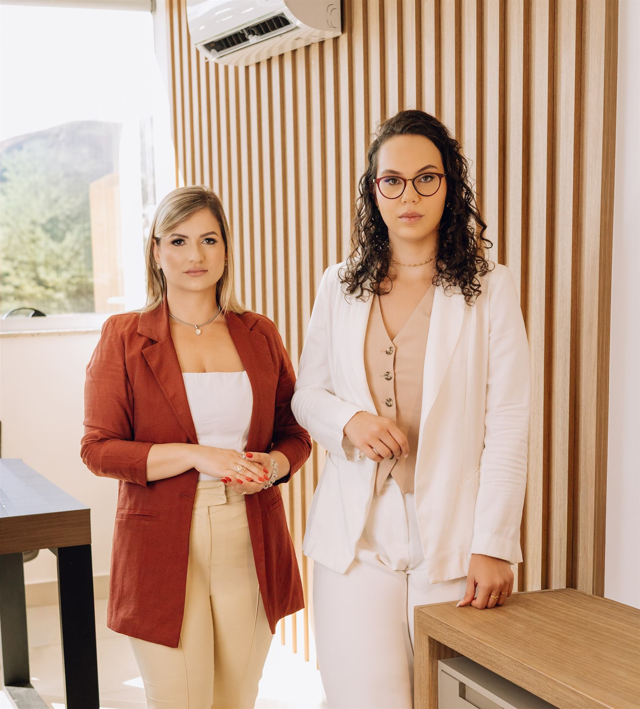
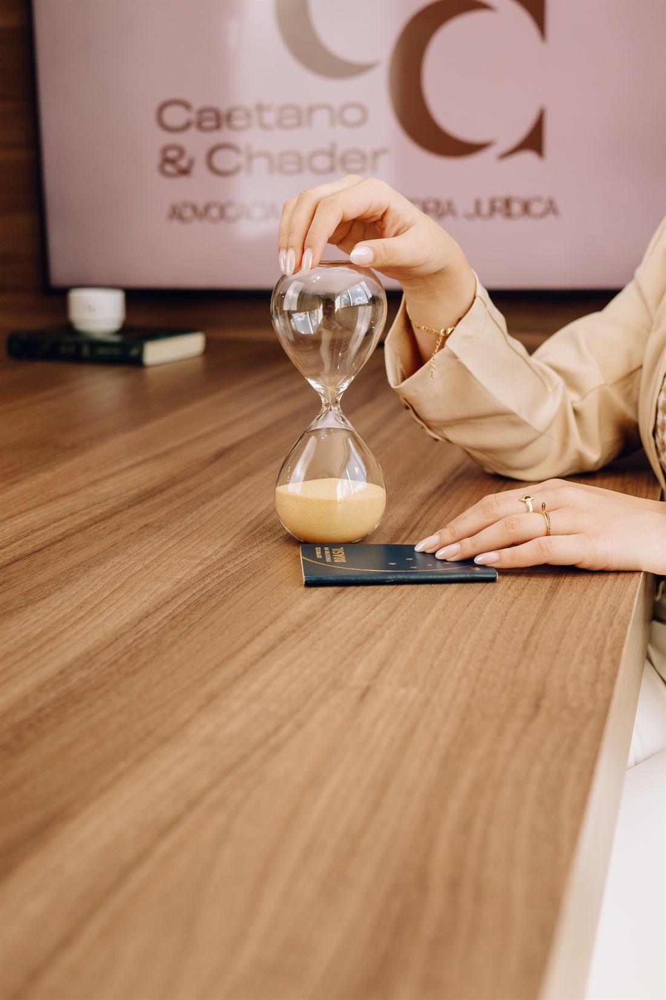
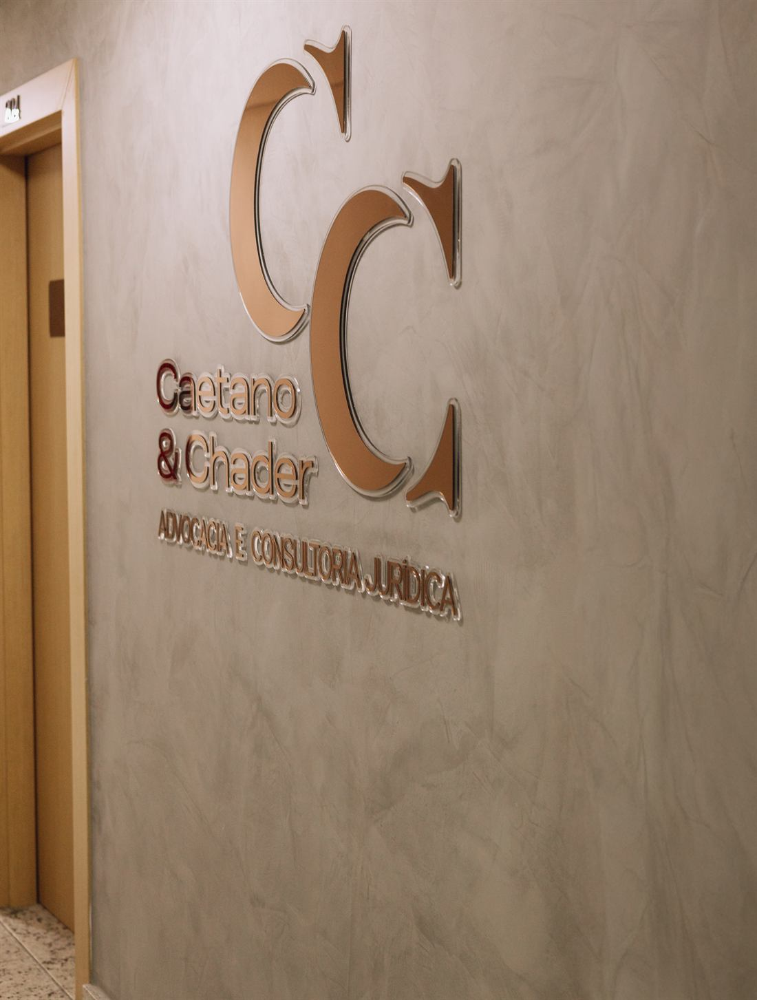
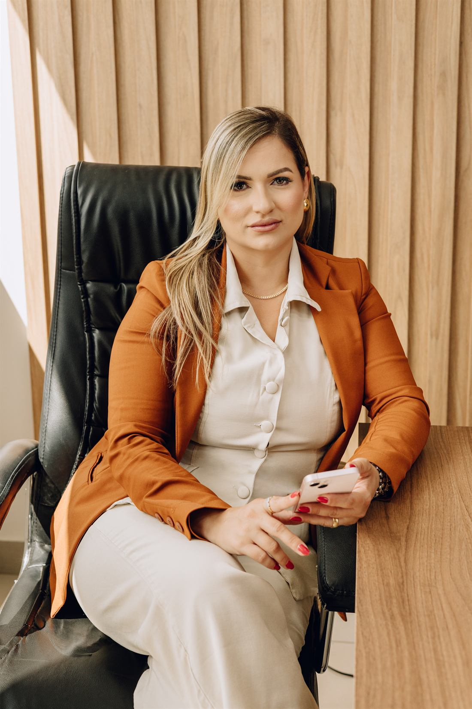
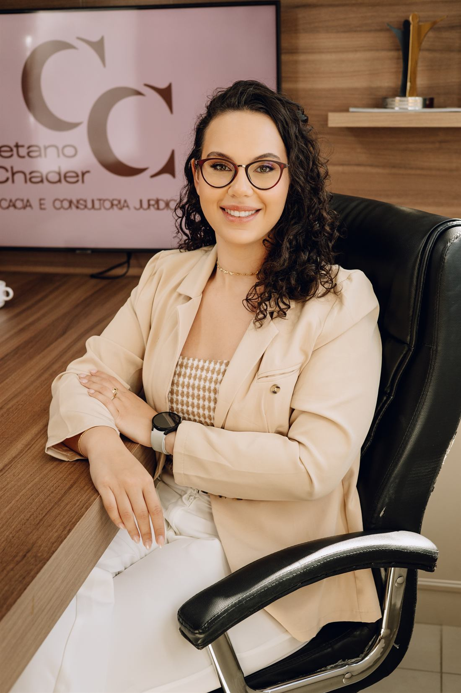
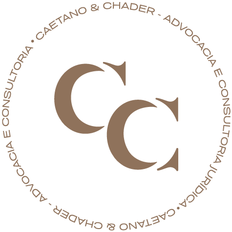

Divórcio com bens, filhos ou empresa?
Antes de assinar um acordo ou tomar uma decisão, entenda como o regime de bens, o patrimônio e as responsabilidades familiares podem afetar o seu caso.
- Atendimento individual e confidencial
- Linguagem clara, sem juridiquês
- Contato direto pelo WhatsApp

Você está passando por alguma destas situações?
Divórcio consensual ou litigioso
Dissolução de união estável
Partilha de imóveis, veículos e investimentos
Empresa, participação societária e patrimônio empresarial
Imóvel ainda financiado
Guarda e convivência com os filhos
Pensão alimentícia
Recebeu uma proposta de acordo e precisa analisá-la antes de assinar
Cada caso tem particularidades.
O primeiro passo é entender exatamente onde você está.

Decisões tomadas no impulso podem custar caro, e por muito tempo.
Muitos homens adiam a orientação jurídica por receio, falta de tempo ou para evitar conflito. Sem clareza, é comum:
- Permanecer em uma separação apenas informal, sem nada resolvido no papel
- Assinar um acordo sem compreender seus efeitos
- Ver o conflito sobre patrimônio e filhos aumentar
- Misturar questões da empresa com questões familiares
- Ter dificuldade para organizar imóveis, financiamentos e dívidas
- Viver com insegurança sobre a convivência com os filhos
- Transformar a solução em algo mais demorado e desgastante
Entender sua situação antes de agir é a forma mais segura de evitar esses caminhos.
Uma análise conjunta da sua vida familiar e patrimonial
Divórcio não envolve só o fim do relacionamento. Envolve patrimônio, empresa, filhos e o seu futuro financeiro. Por isso, a análise considera tudo em conjunto:
Regime de bens e documentos
Qual é o regime e o que dizem os documentos do relacionamento.
Origem dos bens
Quando e como cada bem foi adquirido.
Patrimônio completo
Imóveis, veículos, investimentos, dívidas e participações societárias.
Impactos
Os possíveis reflexos familiares e patrimoniais de cada caminho.
Propostas de acordo
Análise do que foi proposto antes de você assinar.
Filhos
Orientação sobre guarda, convivência e pensão.
Sempre que possível, buscamos uma solução consensual. Quando o acordo não é viável, atuamos judicialmente.
Falar com uma advogada de famíliaO que acontece quando você chama no WhatsApp
Atendimento inicial pelo WhatsApp
Triagem confidencial da sua situação
Identificação do principal problema familiar e patrimonial
Orientação sobre os documentos necessários
Explicação dos possíveis caminhos jurídicos
Informações claras sobre a forma de atuação e os honorários

Clareza e discrição em um momento que pede cuidado
Individual e confidencial
Seu caso é tratado com sigilo, do primeiro contato em diante.
Linguagem clara
Explicações diretas, sem excesso de termos jurídicos.
Família e patrimônio juntos
Filhos, bens e empresa analisados de forma integrada.
Orientação antes da decisão
Você entende os cenários antes de assinar ou decidir.
Contato direto
Fale pelo WhatsApp, sem burocracia.
Atuação regional
Atendimento voltado a Ipatinga/MG e região.
Atendimento conduzido diretamente pelas advogadas do escritório
Na Caetano & Chader, você conversa com quem de fato vai analisar o seu caso, com atenção individual, sigilo e explicações em linguagem clara.


Como funciona
Do primeiro contato aos próximos passos, em quatro etapas simples e confidenciais.
Falar com uma advogada de famíliaVocê chama no WhatsApp
Pelo botão desta página, sem formulários.
Triagem confidencial
Você conta sua situação e tira as primeiras dúvidas.
Orientação inicial
Você entende o problema principal, os documentos e os possíveis caminhos.
Próximos passos
Você recebe as informações sobre atuação e honorários e decide com calma.
Dúvidas comuns de quem está pensando em se separar
Não encontrou a sua? Pergunte diretamente no WhatsApp, com sigilo.

Vou perder metade de tudo?
Não necessariamente. O que entra na partilha depende do regime de bens, de quando e como cada bem foi adquirido e da documentação existente. Só a análise do seu caso mostra o cenário real.
Os bens que eu já tinha antes do relacionamento entram na divisão?
Depende do regime de bens. Em muitos casos, bens anteriores ao relacionamento recebem tratamento diferente dos adquiridos durante a união. Por isso a origem e a data de cada bem são analisadas.
Minha empresa também pode ser afetada?
Pode haver reflexos, a depender do regime de bens e de como a participação foi constituída. A análise considera a empresa junto com o restante do patrimônio para evitar misturar as questões.
Recebi um acordo e estou sendo pressionado a assinar.
Antes de assinar, é importante entender o que o acordo representa para seu patrimônio e para seus filhos. A análise de propostas antes da assinatura é um dos focos do atendimento.
Tenho medo de perder a convivência com meus filhos.
Guarda e convivência são tratadas com prioridade. Você recebe orientação sobre como organizar a rotina e as responsabilidades com os filhos.
Por ser homem, sempre terei que pagar pensão?
Não existe regra automática por gênero. A pensão é definida a partir das circunstâncias de cada família. Na conversa, você entende como isso se aplica ao seu caso.
A casa ainda está financiada. Como fica?
Imóveis financiados têm particularidades, como o que já foi pago, por quem e em que período, além do saldo devedor. Esses pontos são analisados junto com os demais bens e dívidas.
Não quero transformar o divórcio em uma guerra.
Sempre que for adequado, a busca é por uma solução consensual. A atuação judicial acontece quando o acordo não é possível.
Minha esposa administra os documentos e eu não tenho acesso a tudo.
Isso é mais comum do que parece. Na triagem, você recebe orientação sobre quais documentos são necessários e como organizar o que for possível.
Já estamos separados há muito tempo. Ainda preciso formalizar?
A separação apenas informal pode deixar patrimônio, dívidas e responsabilidades sem definição. Vale entender os efeitos de formalizar, ou de não formalizar, na sua situação.
Posso resolver em cartório?
Em alguns casos, sim, quando há consenso e os requisitos legais são cumpridos. Na conversa, é possível avaliar se o seu caso permite esse caminho.
Não sei qual é o nosso regime de bens.
Sem problema. Identificar o regime faz parte da análise inicial, a partir dos documentos do relacionamento.
Quanto tempo o processo pode levar?
Depende do caminho, consensual ou judicial, e da complexidade do caso. Na conversa inicial, você recebe uma explicação sobre os caminhos possíveis.
Quanto vou gastar com advogado?
As informações sobre a forma de atuação e os honorários são apresentadas já no primeiro atendimento, com transparência.
Não quero que minha esposa saiba que estou buscando orientação.
O atendimento é individual e confidencial. Você conversa diretamente com o escritório pelo WhatsApp.
Ainda não decidi se realmente quero me divorciar.
Buscar orientação não obriga você a tomar nenhuma decisão. Entender o cenário ajuda justamente a decidir com mais segurança.
Entenda sua situação antes de decidir.
Converse de forma individual e confidencial com uma advogada de família em Ipatinga/MG e região.
Falar com uma advogada de família